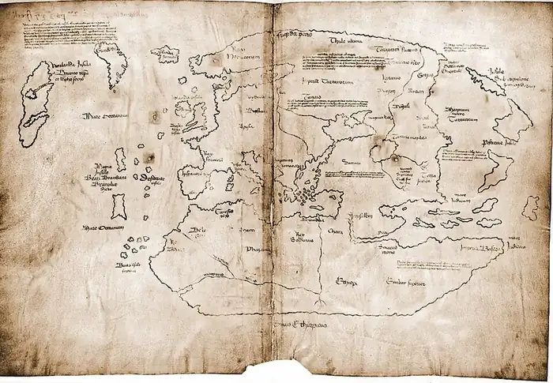
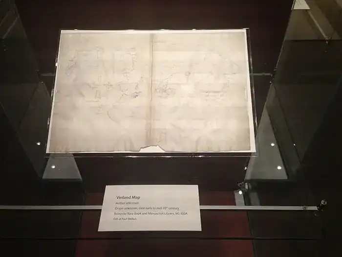
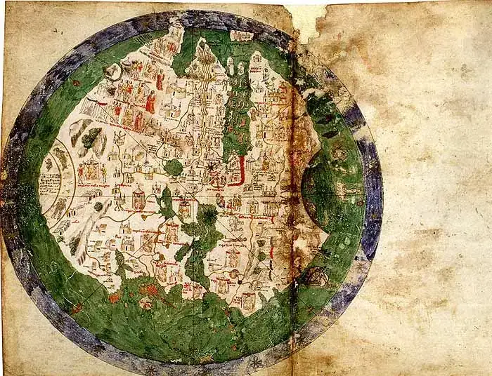

The object
The Vinland Map surfaced in 1957 and was published by Yale in 1965 as a fifteenth-century manuscript — a world map including a landmass west of Greenland labelled 'Vinlandia Insula', apparently confirming Norse contact before Columbus. It was valued partly as a document and partly as an object lesson in how much a map can prove.
Maps, diagrams and images






The ink
Doubts were raised immediately about the ink. In 1974, Walter McCrone reported that the yellow line outlining Vinland contained anatase — titanium dioxide — in a form not manufactured until the 1920s. Yale defended the map for decades, arguing contamination.
In 2021, Yale's own conservation scientists published a definitive analysis: the anatase in the ink is in the specific form produced by industrial pigment manufacture from the 1920s onward, and the map's ink differs in composition from the genuine medieval manuscript it was bound with. Yale announced the map was a forgery.
Documented: the parchment is medieval; the ink is twentieth-century.
Documented: the anatase is the industrial form, not a natural contaminant.
Documented: Yale's own scientists published the result in 2021.
Not established: who made it. The forger has never been identified.
What it does not affect: the Norse reached Newfoundland around 1000. That is established by the L'Anse aux Meadows site, not by this map.
Why it is in the archive
Because it is a case where the institution holding the object did the work that destroyed its value, and said so. The archive collects claims; this is what it looks like when a claim is withdrawn by the people who had the most to lose from withdrawing it.
Open resources on this topic
- BookThe Vinland map and the Tartar relation — Skelton, R. A. (Raleigh Ashlin), 1906-1970 · 1995 (Internet Archive, free to read)
- Bookthe vinland map and the tartar relation — eng · 1965 (Internet Archive, free to read)
- Bookthe vinland map and the tartar relation — 1965 (Internet Archive, free to read)
- PapersOpen-access articles: DOAJ · PubMed Central · Internet Archive Scholar
- BooksPublic-domain and borrowable copies: Open Library · Project Gutenberg · Google Books
More images
Cite this page
Momin, S. (2026). The Vinland Map. The Larger World Archive. https://drsamonline.github.io/LARGE_GLOBE/vinland-map.htmlMomin, Sohil. “The Vinland Map.” The Larger World Archive, 2026, https://drsamonline.github.io/LARGE_GLOBE/vinland-map.html.Momin, Sohil. “The Vinland Map.” The Larger World Archive, 2026. https://drsamonline.github.io/LARGE_GLOBE/vinland-map.html.@misc{the2026vinland,
author = {Momin, Sohil},
title = {The Vinland Map},
year = {2026},
howpublished = {The Larger World Archive},
url = {https://drsamonline.github.io/LARGE_GLOBE/vinland-map.html},
note = {Last reviewed 20 November 2026}
}Last reviewed 20 November 2026 · Corrections policy · this page is not peer reviewed
Sources for this page
- Wikipedia, “Vinland Map” — the object, the analysis and the 2021 findingen.wikipedia.org
- Wikipedia, “Anatase” — the pigment that dates the inken.wikipedia.org
- Wikipedia, “L'Anse aux Meadows” — the evidence that actually settles Norse contacten.wikipedia.org
- Wikipedia, “Forgery” — how manuscript forgeries are detecteden.wikipedia.org